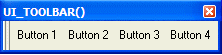

UI_TOOLBAR()
Syntax
UI_TOOLBAR( Choice_List as C [, Title as C [, Has_Tabs as L ]] )
Argument | Description |
Selection | A number ranging from 0 to the number of elements in Choice_List minus one. |
Choice_List | A CR-LF delimited list of choices to appear on the toolbar. |
Title | Optional. The title of the toolbar. |
Has_Tabs | Optional. Default = .F.
|
Description
The UI_TOOLBAR() function runs a script that in turn displays a toolbar populated with the selections provided in Choice_List and returns the user's selection. Because the script displays the toolbar, the programmer does not receive a pointer to the toolbar.
 Note : The user must manually close the toolbar.
Note : The user must manually close the toolbar.

Limitations
Desktop applications only.
Example
dim list as C list = <<%str% Button 1 Button 2 Button 3 Button 4 %str% ui_toolbar(list, "UI_TOOLBAR() ") |
See Also
((User Interaction _UI_ Functions|User Interaction (UI) Functions)), Toolbar Functions and Methods, Display a Pick-List of Scripts